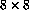

Declare an array which would be suitable for representing draughts board. Write a program to set all the white squares to zero and the black squares to unity. (A draughts board is  with alternate black and white squares)